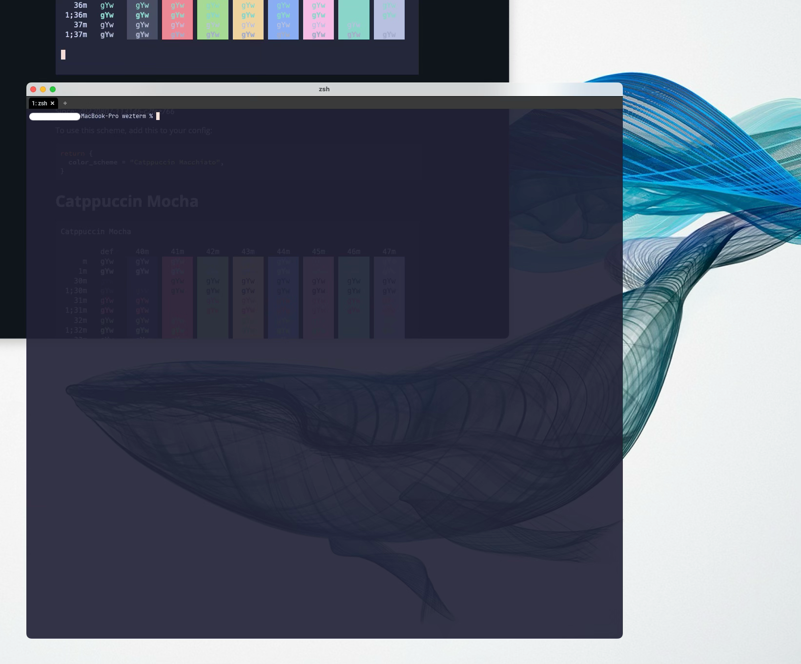

Window
ここではウィンドウの設定を行なっていきます。
Color Schemes
Wezterm では数多くのカラースキームを内蔵しているため、簡単に設定が可能です。
以下から好きなカラースキームを選んで指定します。
735 Color schemes listed by first letter
7351種類のカラースキーム一覧
お気に入りのカラースキームは見つかりましたか？
わたしはCatppuccin Mochaを愛用しているので、以下のようになりました🥰
ちなみに、このWebページのカラースキームもCatppuccinを使ってたりします。
セルフサービスなので、左上のブラシアイコンからお好みで淹れて1みてください😄
window_background_opacity
If your Operating System provides Compositing support then WezTerm is able to specify the alpha channel value for the background content
オペレーティングシステムがコンポジットをサポートしている場合、WezTerm は背景コンテンツのアルファチャンネル値を指定することができます。
透過値はお好みで。わたしはこんな感じで。
一旦確認…
さて、ここまででwezterm.luaは以下のようになりました。

カラースキームについては、白文字しかない状態だと「ちょっと何言ってるかわかんない」ですが、透過は確認できましたね😄
次は、せっかく設定したカラースキームを見たいので、少し脇に逸れてプロンプトを変えてみましょう。
1
誤字じゃないです。カプチーノなので❗